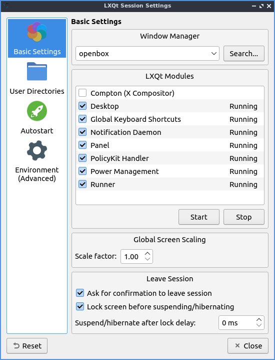
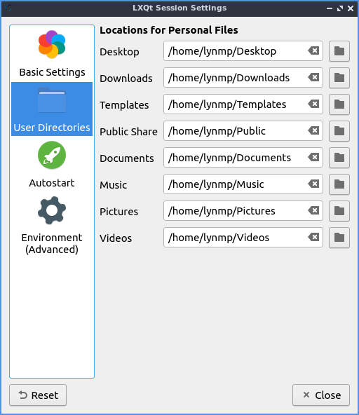
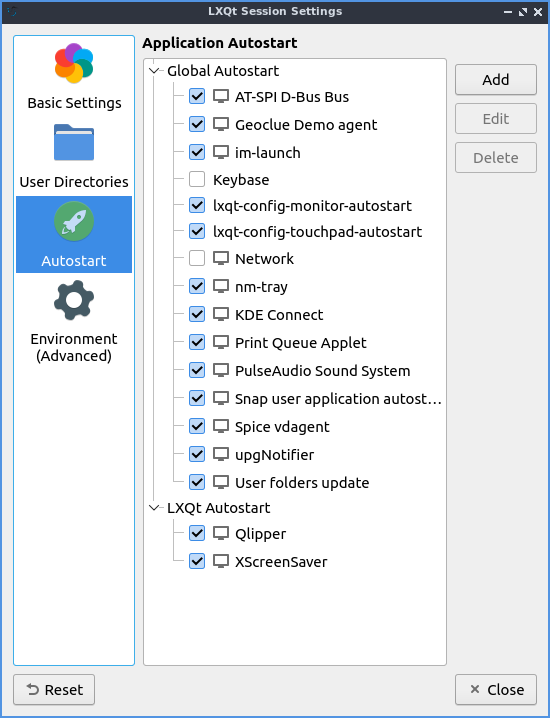
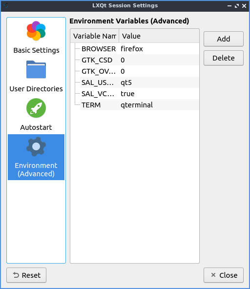

Chapter 3.2.13 Session Settings¶
Session Settings is the way to change what happens when log into Denios-OS. Here you manage default applications and services at startup.
Usage¶
The Basic Settings tab lets you change with a window manager and LXQt modules. To change the window manager used by LXQt, on the basic settings tab use the Window Manager drop down menu. Choose from the drop down list or press Search if the drop down list does not contain your new window manager. The LXQt Modules heading lists the different part of LXQt if you find you do not want part of LXQt active you can enable or disable them here. If you wish to start the compton X11 compositor you can do so here, we have chosen to disable it at default to lower system resources by default. To stop an LXQt Module left click on the module name press the Stop button. To start a stopped LXQt Modules press the Start button. If you want to restart part of LXQt without using the command line first press the Stop button and then the Start button.
To make everything on the screen appear bigger increase the Scale factor field. The checkbox for Ask for confirmation to leave session gives you a simple yes no dialog to make sure you really want to leave so you do not lose your work uncheck it if you do not want this and find this dialog annoying. The Lock screen before suspending/hibernating checkbox locks your screen before suspending or hibernating. To change how long to wait after locking the screen to delay or suspend change the Suspend/hibernate after lock delay field.
To change where LXQt saves the default user directories left click on the User Directories tab. To view what folder to change the default location for use the Desktop, Downloads, Templates, Public Share, Documents, Music, Pictures, or Videos field to change that default folder for that. To bring up a dialog to change your folder press the folder button. In the center shows the current path to your documents. To go back to the default folder press the leftward pointing arrow with an x in it.
The Autostart tab has settings for what to autostart. The autostart applications lets you choose which applications to autostart like managers for print queues. All of these are check-boxes to start various programs. You can start a program at startup by adding it here. Click the Add button, give the process a name e.g. “Terminal drop down” and type in the Name and type appropriate terminal command e.g. “qterminal -d” where it says Command. If you are say autostarting a clipboard manager or something else that needs to be in a system tray check the Wait for system tray checkbox so the application does not autostart before the system tray and does not end up running. To change a keyboard shortcut press the Edit button. To stop a program from running automatically but not to delete the entry uncheck the checkbox in front of that entry. To remove a setting for autostart first uncheck the checkbox to disable autostarting that program then left click on the autostart press the Delete button.
The tab for Environment (Advanced) has many effects for you environment variables for your session. The Variable Name provides the name of the environment variable. To change the value of a variable double click on the value under the Value column. To add a new environment variable press the Add button. Then at the bottom a dotted line will appear and double click to enter the Variable Name and the Value for the variable. To delete an environment variable press the Delete button. To change your cursor size change the XCURSOR_SIZE variable.
If you want to undo changes you have done press the Reset button. To close session settings press the Escape key or press the Close button.
Version¶
Denios-OS ships with version 1.1.0 of Session Settings.
How to Launch¶
To launch Session Settings from the menu . The icon for Session Settings looks like two interlocked gears. To run Session Settings from the command line run
lxqt-config-session